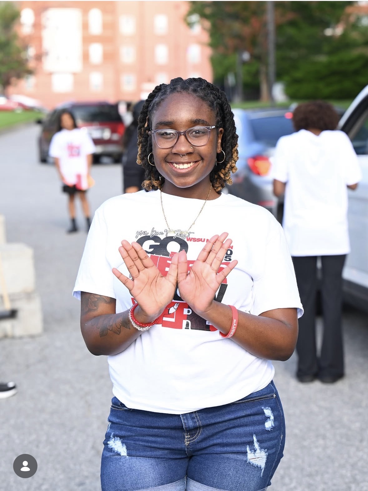
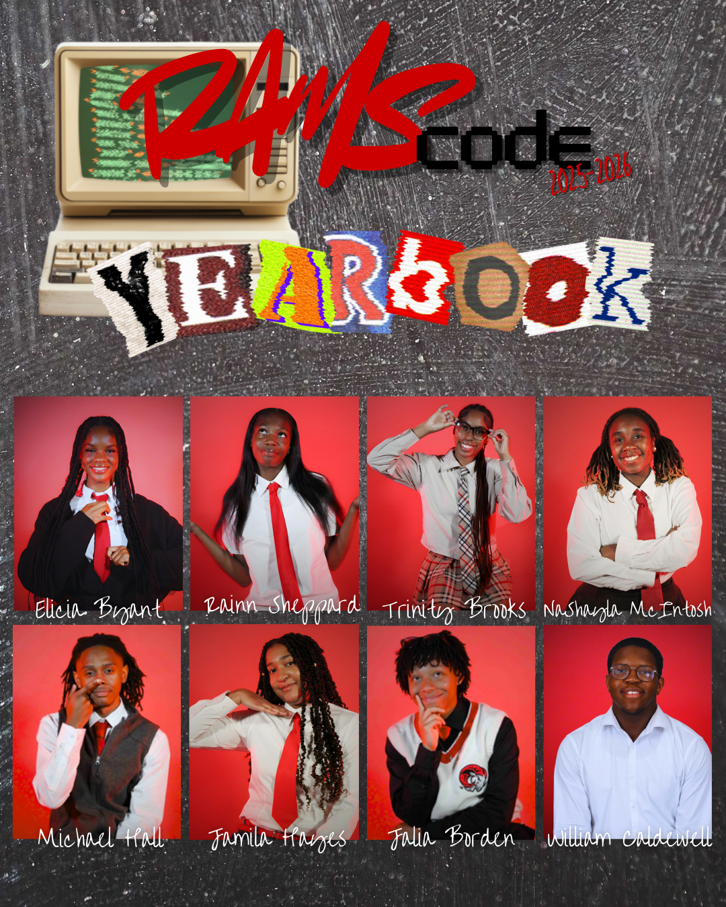
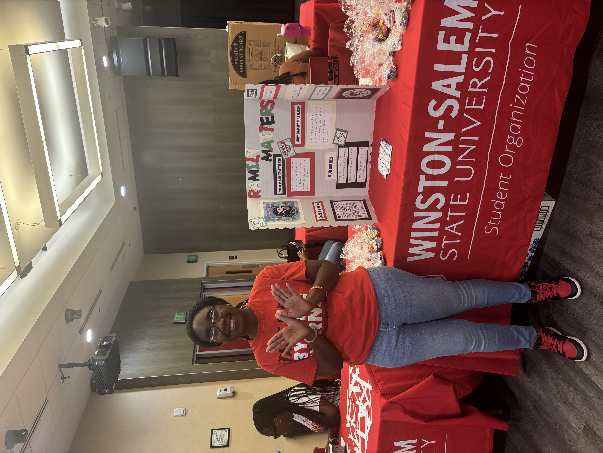

Leadership & Campus Involvement
I am actively involved on campus through leadership, service, and student engagement, and these experiences have strengthened my communication, teamwork, and organizational skills.
I am actively involved on campus through leadership, service, and student engagement, and these experiences have strengthened my communication, teamwork, and organizational skills.
Serve as a Desk Attendant responsible for maintaining a safe and welcoming residential environment. Duties include assisting residents and guests, managing front desk operations, and enforcing community policies.
This role has strengthened my communication, problem-solving, and time management skills while allowing me to build strong interpersonal relationships within the campus community.
Serve as a club representative on the RAMSCode executive board, helping support and promote student engagement in technology and computer science-related activities on campus.
Contribute to organizing events, collaborating with peers, and fostering a community centered around coding, innovation, and professional development.
Actively participate in a campus organization focused on community service and student support initiatives.
Engage in outreach activities and events aimed at giving back to the community, promoting unity, and making a positive impact on and off campus.

Assisted in welcoming and supporting incoming first-year students, helping create a positive and inclusive transition into campus life.

Participated in a creative introduction campaign as part of the RAMSCode executive board, helping showcase leadership and promote student engagement in technology.

Participated in an open house event for Ramily Matters, engaging with prospective students and sharing information about campus involvement and community initiatives.